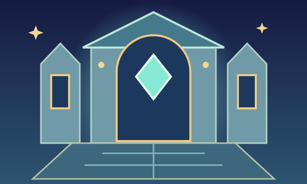

비밀 건축 연구소
사라진 설계도를 기억해
잠든 연구소를 복구해요!
- 위치 기억
- 높이와 방향
- 설계도 회전
단계마다 3문제 · 문제당 제출 3회
처음 제출에서 2문제 이상 맞히면 성공!
틀린 구조는 고쳐서 다시 제출할 수 있어요.
↑ 북쪽
별·힌트·콤보에 따른 추가 포인트는 없어요.

사라진 설계도를 기억해
잠든 연구소를 복구해요!
단계마다 3문제 · 문제당 제출 3회
처음 제출에서 2문제 이상 맞히면 성공!
틀린 구조는 고쳐서 다시 제출할 수 있어요.
↑ 북쪽
별·힌트·콤보에 따른 추가 포인트는 없어요.